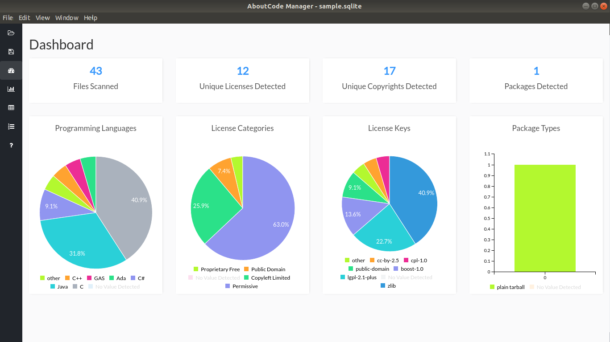
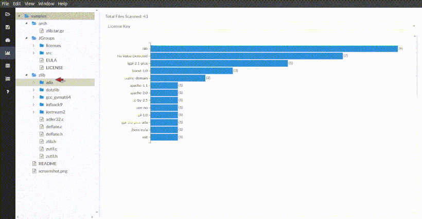

How to Visualize Scan results¶
In this simple tutorial example, we import results from a basic scan performed on the samples
directory distributed by default with Scancode, and visualize the outputs through
Scancode Workbench.
Warning
This tutorial uses the 3.1.1 version of Scancode Toolkit, and Scancode Workbench 3.1.0 (This beta version of ScanCode Workbench is compatible with scans from any ScanCode Toolkit develop version/branch at or after v3.0.2). If you are using an older version of Scancode Toolkit, check respective versions of this documentation. Also refer the Scancode Workbench release highlights.
Warning
This tutorial is for Linux based systems presently. Additional Help for Windows/MacOS will be added.
Setting up Scancode Workbench¶
According to the Installation instructions for the Workbench, we have to install Node.js 6.x or later. Refer to Node.js install instructions here.
You can also run the following commands:
sudo apt-get install -y nodejs
sudo npm install npm@5.2.0 -g
After Node.js and npm is installed and get the Scancode Workbench 3.1.0 tarball from the
Workbench Release Page. Extract
the package and then launch Scancode Workbench:
./ScanCode-Workbench
This opens the Workbench.
Note
You can also build Scancode Toolkit and Scancode Workbench from source. Clone the repository,
don’t forget to checkout to the specific release using git checkout <release>, and follow
the build instructions. You’ll also have to create a Python 2.7 Virtual Environment, or use the
same venv-3.1.1 created here at How to Run a Scan.
Importing Data into Scancode Workbench¶
Click on the
File -> Import JSON Fileor PressCtrl + I.Select the file from the pop-up window.
Select a Name and Location (where you want it later) for the .sqlite output file.
Note
You can also import a .sqlite file you’ve saved in the past to load scan results. As it is much faster, once you’ve imported the JSON file and a corresponding SQLite file has been created, you shouldn’t repeat this. Instead, import the SQLite file next time you want to visualize the same scan result.
Visualization¶
Views¶
Refer to the workbench documentation for more information on Visualization.
The dashboard has a general overview.
There are 3 principal views (They appear in the same order in the GIFs):
Chart Summary View,
Table View,
Components Summary View.
Filters¶
You can also click any file/directory on the file list located on the right, to filter the results such that it only contains results from that File/Directory.
Components¶
Refer How-To: Create Conclusions for more information on Components.
In the table view,
Apply filters by selecting Files/Directories
Right Click on the Left Panel
Select
Edit ComponentA pop-up opens with fields, make necessary edits and Save.
Go to the Component Summary View to see the Component.